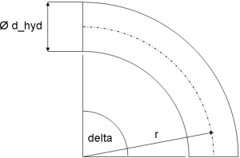
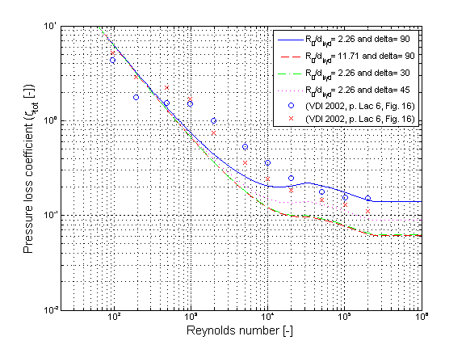
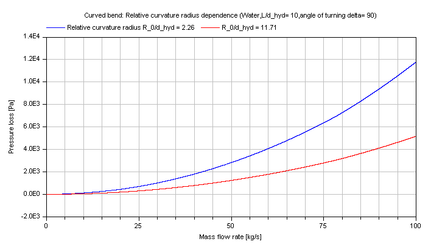
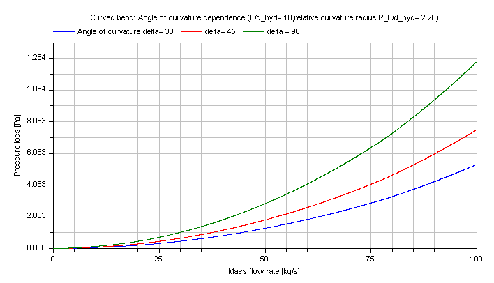

Calculation of pressure loss in curved bends at overall flow regime for incompressible and single-phase fluid flow through circular cross sectional area considering surface roughness.
This function shall be used inside of the restricted limits according to the referenced literature.
Geometry

The pressure loss dp for curved bends is determined by:
dp = zeta_TOT * (rho/2) * velocity^2
with
rho |
as density of fluid [kg/m3], |
velocity |
as mean velocity [m/s], |
zeta_TOT |
as pressure loss coefficient [-]. |
Curved bends with relative curvature radius R_0/d_hyd ≤ 3 according to [Idelchik 2006, p. 357, diag. 6-1]
The pressure loss of curved bends is similar to its calculation in straight pipes. There are tree different flow regimes observed (laminar,transition,turbulent). The turbulent regime is further separated into sections with a dependence or independence of the local resistance coefficient (zeta_LOC ) on Reynolds number. The local resistance coefficient (zeta_LOC) of a curved bend is calculated in dependence of the flow regime as follows:
zeta_LOC = A2/Re + A1*B1*C1
zeta_LOC = k_Re * (A1*B1*C1)
where k_Re depends on the relative curvature radius R_0/d_hyd
k_Re = 1 + 4400/Re for 0.50 < r/d_hyd < 0.55
k_Re = 5.45/Re^(0.118) for 0.55 ≤ r/d_hyd < 0.70
k_Re = 11.5/Re^(0.19) for 0.70 ≤ r/d_hyd < 3.00
zeta_LOC = A1*B1*C1
with
A1 |
as coefficient considering effect of angle of turning (delta) [-], |
A2 |
as coefficient considering effect for laminar regime [-], |
B1 |
as coefficient considering effect of relative curvature radius (R_0/d_hyd) [-], |
C1=1 |
as coefficient considering relative elongation of cross sectional area (here: circular cross sectional area) [-], |
k_Re |
as coefficient considering influence of laminar regime in transition regime [-], |
Re |
as Reynolds number [-]. |
The pressure loss coefficient zeta_TOT of a curved bend including pressure loss due to friction is determined by its local resistance coefficient zeta_LOC multiplied with a correction factor CF for surface roughness according to [Miller, p. 209, eq. 9.4]:
zeta_TOT = CF*zeta_LOC
where the correction factor CF is determined from the darcy friction factor of a straight pipe having the bend flow path length
CF = 1 + (lambda_FRI_rough * pi * delta/d_hyd) / zeta_LOC
and the darcy friction factors lambda_FRI_rough is calculated with an approximated Colebrook-White law according to [Miller, p. 191, eq. 8.4]:
lambda_FRI_rough = 0.25*(lg(K/(3.7*d_hyd) + 5.74/Re^0.9))^-2
with
delta |
as curvature radiant [rad], |
d_hyd |
as hydraulic diameter [m], |
K |
as absolute roughness (average height of surface asperities) [m], |
lambda_FRI_rough |
as darcy friction factor[-], |
Re |
as Reynolds number [m], |
zeta_LOC |
as local resistance coefficient [-], |
zeta_TOT |
as pressure loss coefficient [-]. |
The correction for surface roughness through CF is used only in the turbulent regime, where the fluid flow is influenced by surface asperities not covered by a laminar boundary layer. The turbulent regime starts at Re ≥ 4e4 according to [Idelchik 2006, p. 336, sec. 15]. There is no correction due to roughness in the laminar regime up to Re ≤ 6.5e3 according to [Idelchik 2006, p. 336, sec. 15].
Nevertheless the transition point from the laminar to the transition regime is shifted to smaller Reynolds numbers for an increasing absolute roughness. This effect is considered according to [Samoilenko in Idelchik 2006, p. 81, sec. 2-1-21] as:
Re_lam_leave = 754*exp(if k ≤ 0.007 then 0.0065/0.007 else 0.0065/k)
with
k = K /d_hyd |
as relative roughness [-], |
Re_lam_leave |
as Reynolds number for leaving laminar regime [-]. |
Note that the beginning of the laminar regime cannot be beneath Re ≤ 1e2 .
Verification
The pressure loss coefficient zeta_TOT of a curved bend in dependence of the Reynolds number Re for different relative curvature radii R_0/d_hyd and different angles of turning delta is shown in the figures below.

There are deviations of the pressure loss coefficient zeta_TOT comparing different references. Usually these deviations in the transition regime have to be accepted due to an uncertainty for the determination of comparable boundary conditions in the different references. Nevertheless these calculations cover the usual range of pressure loss coefficients for a curved bend. The pressure loss coefficient zeta_TOT for the same geometry can be adjusted via variing the average height of surface asperities K for calibration.
The pressure loss in dependence of the mass flow rate of water is shown for different relative curvature radii:

The pressure loss in dependence of the mass flow rate of water is shown for different angles of turning:

Note that there is a small deviation between the compressible and incompressible calculation due to the lack of a direct analytical invertibility.
References